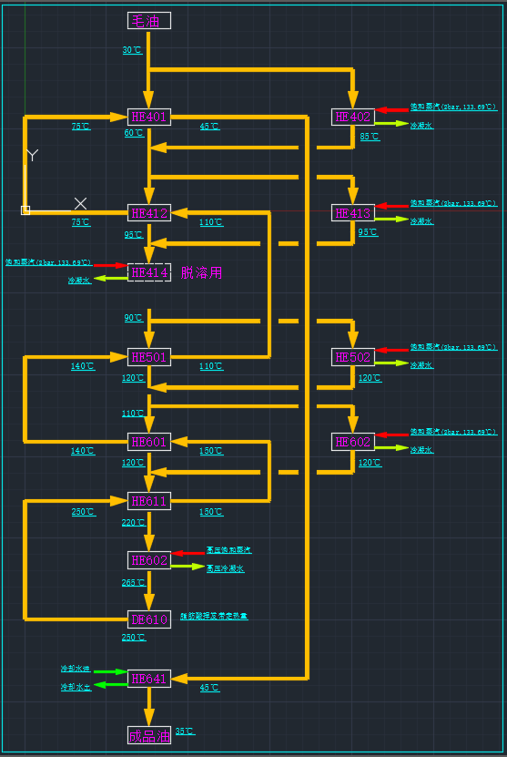
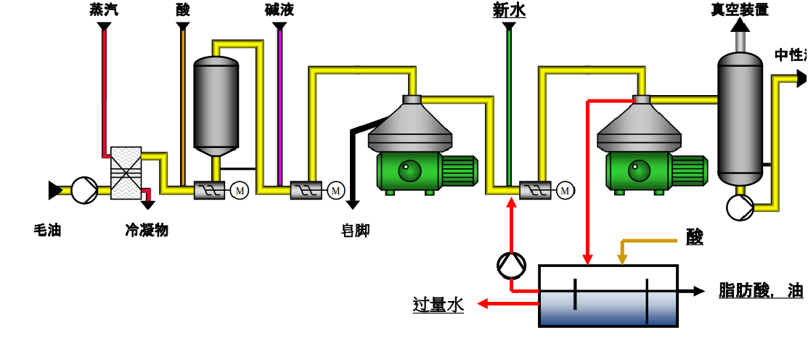
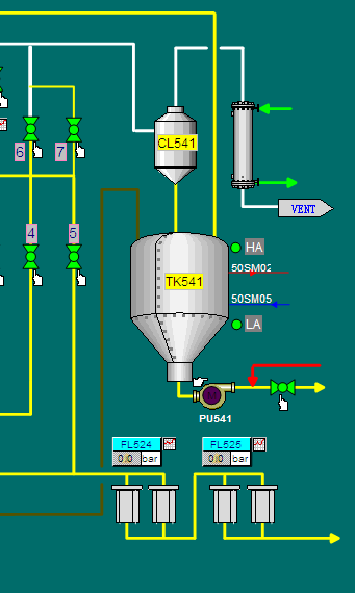
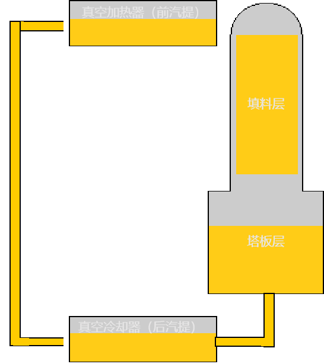
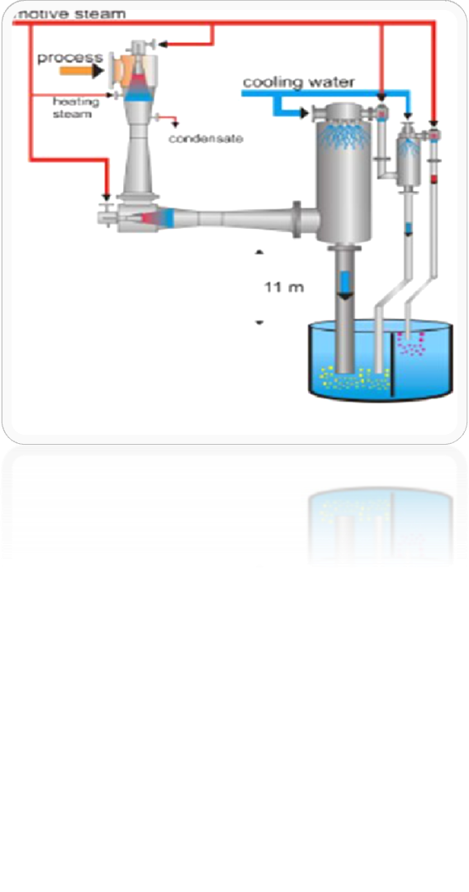
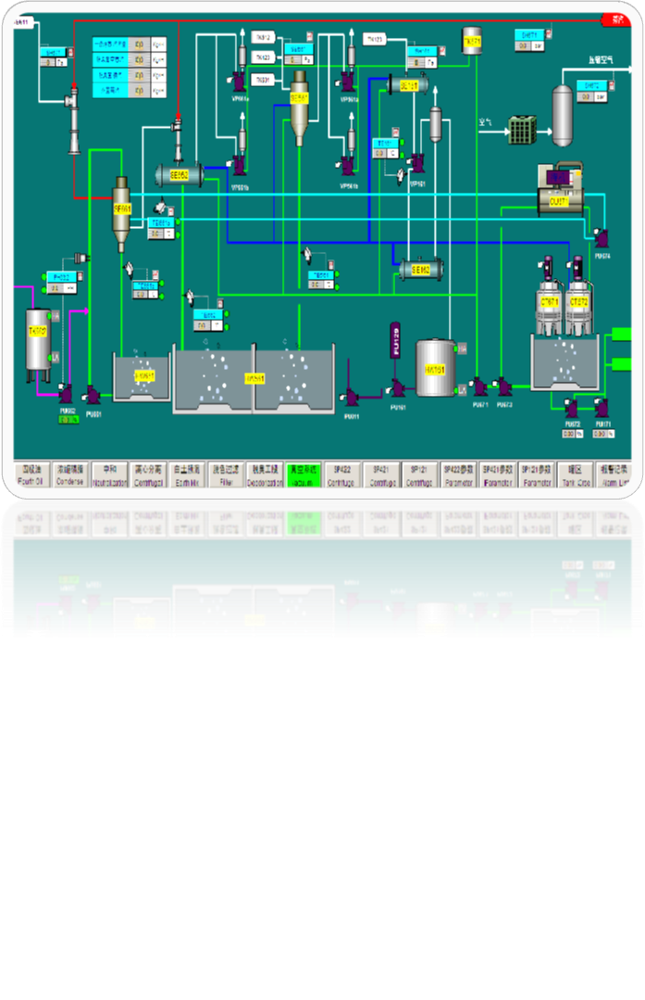
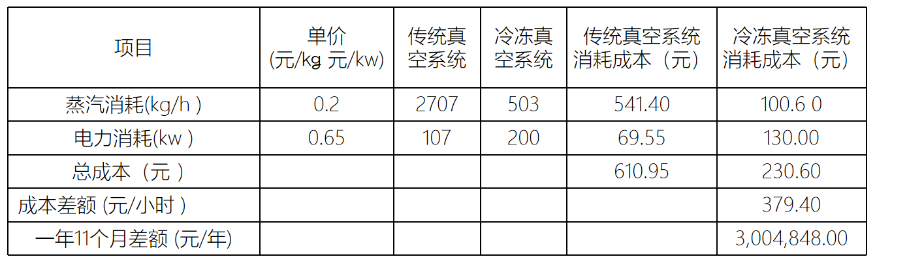

我们更加注重生产成本的控制，我们的工程案例中已经实现了在正常生产时，油脂加工工艺温度通过热交换实现，而不需要加热获得。
加热所需热量 （215 ～ 245度）
系统热量挥发损耗/挥发物质挥发带走的热量：5 ～ 15度
最终脱臭温度：240 ～ 250度
板式节能器 （10度温度损失，温差20度）：热回收效率为85%
带有连续脱蜡的全精炼车间，增加的蒸汽耗量为20 ～ 25kg/T油

洗涤水: 最大值30kg/t毛油
约0.3-0.5%脂肪性物质
约1500-3000mgO2/L COD
新水占洗涤水总量15%-30%
每隔7-10天更换全部用水
新水消耗量较少至4.5-9kg/t毛油
将吹饼蒸汽冷凝为水，减少废气排放。
通过结构合理的吹饼刹克龙将“油”、“汽”实现绝大部分分离。
通过吹饼冷凝器冷凝的水含有少量的植物油，再通过室外的三级隔油池对油进行回收。
通过上面的综合处理实现了在减少废气排放的同时减少了污水中脂肪物的含量
通过大量的工程实践，远洋的此系统做的了防堵和便于维护清理等优点
经过真空加热后的油进入脱臭塔后，油温降低幅度减小（挥发1%的脂肪酸会使油温降低1.3度）；
无需在脱臭塔中安装防止进油飞溅的装置；
可增加额外的滞留时间；
可减缓结垢现象；
可使液态油具有最佳风味；
可降低能耗（热回收效率提高）。
 传统脱臭真空系统/冷冻水脱臭真空系统

注：
常规系统冷凝器进水温度32°C
低温水系统冷凝器进水温度7°C
真空蒸汽压力：8barg